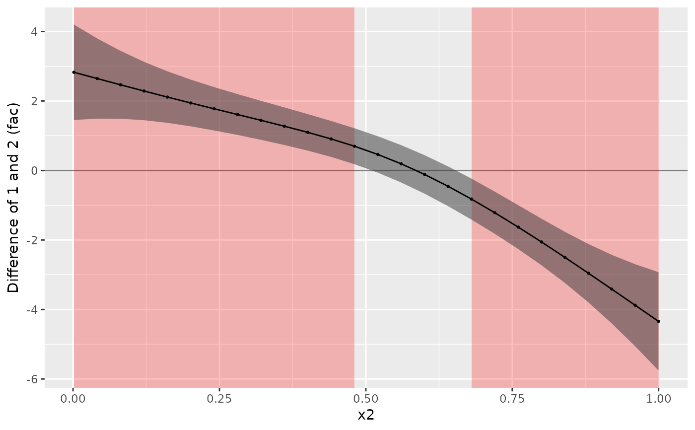

Plotting methods for tidygam.diff objects.
Usage
# S3 method for class 'tidygam.diff'
plot(x, ..., sig = TRUE, sig_col = "red", sig_alpha = 0.25)Arguments
- x
A
tidygam.diffobject (seeget_difference()).- ...
Arguments passed to
plot().- sig
Shade the interval(s) where the difference smooth does not include 0 (default is
TRUE).- sig_col
Colour for the shading (default is
"red").- sig_alpha
Alpha level for the shading (default is
0.25)
Examples
library(mgcv)
set.seed(10)
data <- gamSim(4)
#> Factor `by' variable example
model <- gam(y ~ s(x2, by = fac) + s(x0), data = data)
model_diff <- get_difference(model, "x2", list(fac = c("1", "2")))
#> Warning: Could not recover model data from environment. Please make sure your
#> data is available in your workspace.
#> Trying to retrieve data from the model frame now.
plot(model_diff)
